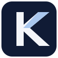

Desenvolvimento de software
Aplicações web, sistemas personalizados e integrações para apoiar rotinas empresariais.
Desenvolvemos software, aplicamos inteligência artificial e automatizamos processos para transformar desafios empresariais em operações mais simples e eficientes.

KERNWERK LABSA Kernwerk Labs é uma iniciativa de tecnologia voltada à criação de soluções digitais sob medida. Unimos engenharia de software, análise de dados e automação para aproximar tecnologia das necessidades de cada negócio.
Entender o problema antes de definir a solução.
Construir sistemas consistentes, úteis e sustentáveis.
Usar tecnologia para melhorar continuamente processos.
Desenvolvimento técnico conectado à realidade de quem usa.
Aplicações web, sistemas personalizados e integrações para apoiar rotinas empresariais.
Aplicações de IA e aprendizado de máquina para extrair valor de dados e automatizar tarefas.
Redução de atividades repetitivas, integração de ferramentas e melhoria de fluxos.
Organização, tratamento e comunicação de dados entre sistemas e serviços.
Ferramentas e experimentos desenvolvidos para necessidades específicas.
Geração de comprovantes de ordem de serviço e encomendas, com uma experiência simples para registrar e apresentar informações do atendimento.
Conhecer ferramentaUma aplicação simples de organização de fila, desenvolvida para apoiar o controle de utilização de espaços compartilhados.
Conhecer projetoConte o que você precisa melhorar. Vamos explorar caminhos possíveis com tecnologia.